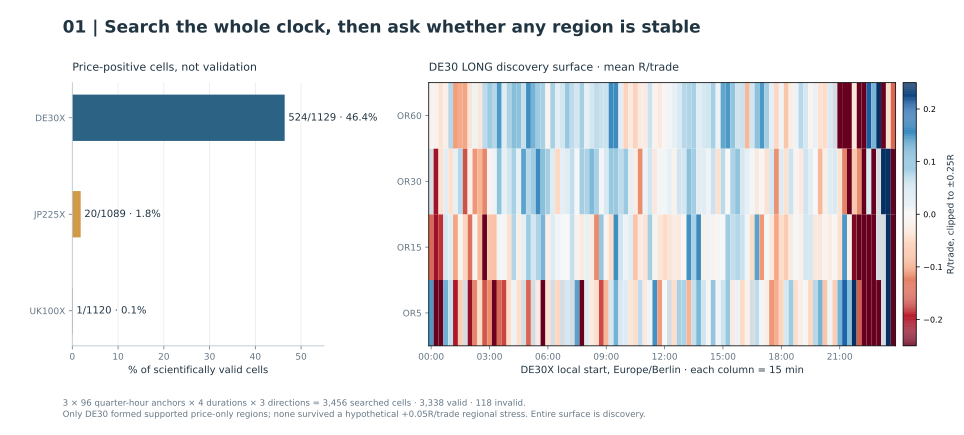
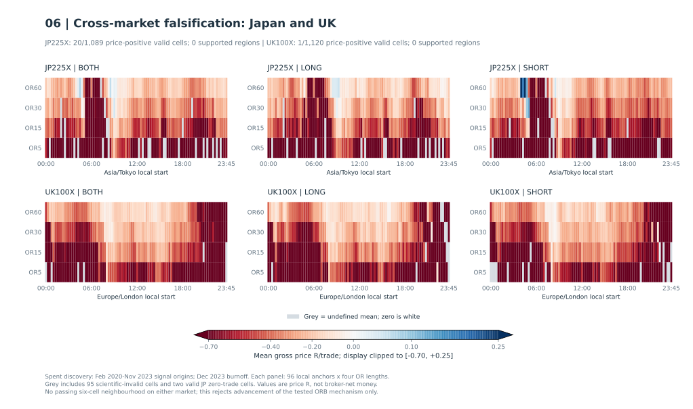
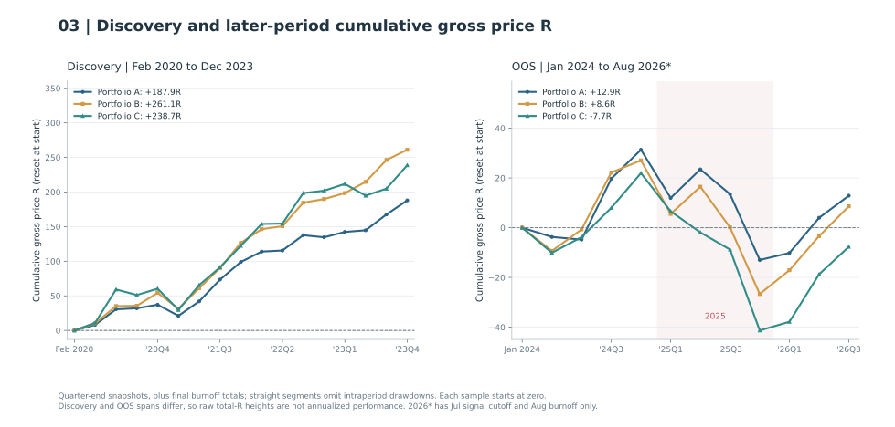
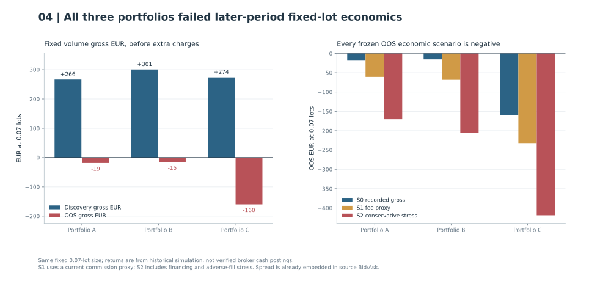

ORBINDEX: promising timings, later losses
An opening-range timing search tested neighbouring configurations, cross-market robustness and portfolio interactions before a later economic comparison.
Decision. None of the frozen portfolios was promoted. Each lost fixed-volume EUR in the later historical comparison before additional commission or financing.
Main limitation. The later period may already have been inspected in other German-index research, so it cannot be treated as a completely fresh independent test. Broker-net returns also remain unverified.
Where the candidates came from
The discovery searched 3,456 opening-range configurations across German, Japanese and UK index CFDs. Different start times, range lengths and trade directions overlapped, so the strongest result was not automatically the most convincing.
On the German index, some favourable timings had nearby settings that also looked promising. That mattered more than a single isolated peak, but the evidence was sensitive to even modest additional costs.


The verified German-index heatmap shows one slice of the discovery search, not net broker profit. · Open figure
Research evidence: Timing search
Did the pattern hold across markets?
Japan and the UK produced occasional positive configurations, but neither supplied a neighbourhood that passed the same robustness screen. The result applies to this particular rule and search, not to those markets generally.


The original cross-market heatmaps help distinguish isolated peaks from a supported region. · Open figure
Research evidence: Timing search
From individual trades to portfolios
The German candidates were combined into three frozen portfolios. A shared pending-order or position slot mattered: an earlier order could block a later opportunity, so simply adding standalone backtest returns would have been misleading.
Each portfolio was evaluated under those same order-ownership rules before being carried into the later historical comparison.
Research evidence: Portfolio simulation
Discovery versus later performance
The discovery portfolios accumulated positive gross price R, but their later-period trajectories weakened considerably. Each sample restarts at zero, so these are not continuous account equity curves.


Quarter-end cumulative gross price R snapshots are connected by straight segments. They do not show intraperiod drawdowns, and the periods differ in length. This is not an annualized or broker-net comparison. · Open figure
Research evidence: Later-period results
What happened later
Across the 2024–July 2026 historical scenario, all three portfolios lost money in fixed-volume euros with Bid/Ask spread already included. The comparison below is gross of additional commission and financing; it is not verified historical broker-net profit.
| Frozen portfolio | Later gross EUR |
|---|---|
| A | −€18.73 |
| B | −€15.34 |
| C | −€159.73 |


All three later monetary outcomes were negative before additional commission or financing. · Open figure
Research evidence: Later-period results
What the result means
The subsequent review found that spread costs contributed to weaker results, but unfavourable midquote movement mattered too. Breakouts could briefly move in the expected direction and still fail to finish as winners.
The frozen portfolios were closed, not retuned using already-seen history. The finding is about these specific portfolios, not proof that opening-range strategies cannot work elsewhere.
The later test is informative but not a pristine independent holdout, because some of its history may have been inspected in earlier research.
Research evidence: Later-period results · Follow-up analysis
Data and verification
The public figures can be rebuilt from released aggregates. The original market backtests require private quotes and implementations, so they cannot be independently rerun from this website.
Complete research record · Published aggregate data · Reproduce the figures